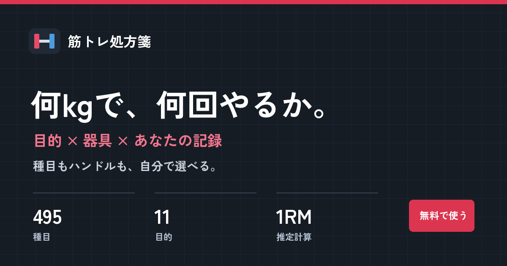

条件を選ぶ
目的、使える器具、動作への慣れ、鍛えたい部位を選択します。初回の重量記録は空欄で大丈夫です。

条件を選んでから「メニューを表示」を押してください。
保存はこのブラウザ内です。別の端末ではJSONを書き出して読み込みます。
同じフォームで限界まで挙げた重さと回数から、1回だけ挙げられる重量を推定します。
| %1RM | 最大反復回数の目安 | 計算重量 |
|---|
表示重量は計算前の概算です。実際の刻みはメニュー側で調整してください。
Epley式は重量×(1＋反復回数÷30)。Brzycki式は重量×36÷(37－反復回数)。平均はこの2つを合わせた値。NSCA対応表は重量が1RMの何％に当たるかを反復回数ごとの表から逆算します。どれも推定で、種目や人により差があります。
目的、使える器具、動作への慣れ、鍛えたい部位を選択します。初回の重量記録は空欄で大丈夫です。
結果の回数・セット数から開始し、同じ姿勢であと数回できる余裕を保ちます。痛みがあれば中止してください。
前回の重量と回数を入れると、推定1RMから開始重量を計算できます。結果を保存し、JSONで別の端末へ移せます。
すべての種目から名称・器具・部位で絞り込めます。
同じ種目の前回の重量・回数・余裕回数から1RMを推定し、目的の割合を掛けて器具の刻みに切り下げます。記録がない場合は軽い負荷から試してください。
ありません。姿勢を保ち、指定された余裕回数を残せる重さを目安に調整します。
使えます。姿勢や張りを調整します。体重やチューブの色を正確な重量kgへ変換することはできません。
自動同期はありません。「保存データを書き出す」でJSONを作り、別の端末で読み込めます。
広告枠には「広告」、商品紹介には「PR / 広告」を明記します。広告や購入の有無で種目の順序や計算式は変えません。この配布版には広告ID・紹介先URLを設定していません。
掲載方針を読む ↗入力した重量、保存したメニューはブラウザ内で扱います。JSONを書き出した場合はご自身で保管してください。お問い合わせは公開サイトのフォームへ移動します。
プライバシーポリシー ↗1RMは推定値で、同じフォームと器具の記録を比較するときの開始点です。経験と体調に合わせて調整してください。
計算方法と根拠 ↗